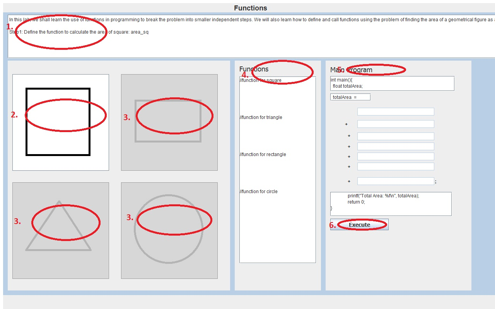

Writing large programs effectively requires decomposition of the code into several independent modules. This makes the program easier to maintain and edit. This is done by taking the problem and breaking it into small, managable pieces. A function is a portion of code within a larger program that performs a specific task and is relatively independent of the remaining code. This helps in decomposition of the code into smaller independent modules. The task performed by a function can be summarised as taking as input a set of variables and returning a value after doing computation with these values. The value of the input variables may also be updated during the computation. Since the functions are written independent of the main code, the same function can be called from the main program with different input variables. The allows reuse of the code and hence shortening of the code.
An example of a function, say you are making a program that calculates sales tax and returns the total payable amount. The function would ask for a subtotal(s_total) and the tax percentage(p) as arguments, then take that s_total and multiply it by p/100 to calculate the sales tax(s_tax). After this, the function would calculate the total payable amount by adding sales tax(s_tax) and sub total(s_total) and return it to the main program. This function can be called many times from the main program for different customers by proving thier sub total and sales tax to be applied.

Function basically is a independent piece of code which takes some variables as input and returns a result. The function may optionally update the values of the input variables. Writing a function involves clearly specifying the characteristics of the funciton in its prototype. The prototype of a function looks like:
return_type Function_name(datatypes_of_input_variables);
For example, the prototype of a function for computing tax and returning the total payable amount may look like:
float compute_total(float ,float );
This states that the name of the function is compute_total. It accepts two float variables as input and returns a float value as output. Next, we define the function by writing the code corresponding to the computation of the return value of the function.
float compute_total(float subtotal,float tax_rate)
{
float total;
total=subtotal*(1+(tax_rate/100));
return total;
}
The input variables in this function are named subtotal and tax_rate and both of them are of float datatype. The value which this function return will be type casted into float before returning. This function can be called from the main function as:
total=compute_total(1000,8);
A complete code with functions may look like this:
function_prototypes;
main()
{
function_calls;
}
function definitions;

- To understand that a big program can be broken up into independent modules
- To learn to define functions and call them with appropriate parameters


In this experiment you will learn how to write functions and how to call them with proper arguments.


- The top window panel gives the problem statment and the relevant steps to solve the proble throughout the course of the lab.
- Click on the square to define a function for calculating the area of a square.
- Similarly define functions for the other geometrical figures
- The defined functions are shown in the middle window
- Now do appropriate function calls in the main program to compute the area of the figure displayed
- Press execute to execute the code and see the output
